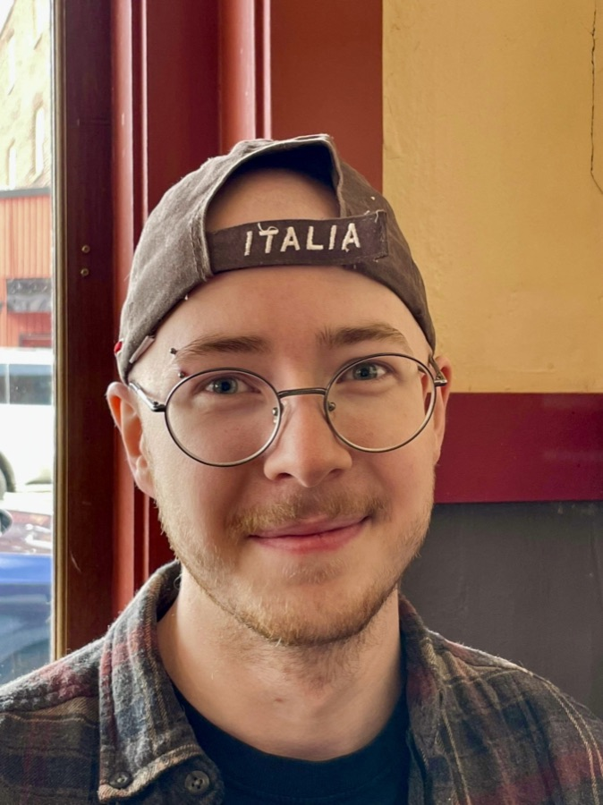

Evan Angelone
Abstract
I am a PhD candidate in the Department of Mathematics at Northeastern University, advised by Egon Schulte. My research focuses on discrete geometry, algebraic graph theory, and combinatorial topology, particularly as they relate to abstract polytopes, chiral symmetry, and the combinatorics of convex polytopes.
Previously, I earned an AS from Raritan Valley Community College (2018) as a first-generation college student and a BA from Reed College (2021), where I wrote my year-long senior thesis regarding the Ehrhart polynomial of cyclic polytopes under Jamie Pommersheim.
1Research
-
Chiral polyhedra from AGL(1, q). With Egon Schulte. Under review, 2026. arXiv:
2603.02543 . -
Cops and robbers on chess graphs. With Sally Ambrose, Jacob Chen, Daniel Ma, Arturo Ortiz San Miguel, Wraven Watanabe, Stephen Whitcomb, and Shanghao Wu. Under review, 2025. arXiv:
2509.18516 . -
Burning games on strong path products. With Sally Ambrose, Jacob Chen, Daniel Ma, Arturo Ortiz San Miguel, Wraven Watanabe, Stephen Whitcomb, and Shanghao Wu. Under review, 2025. arXiv:
2509.20572 . - Cyclic cones & non-singular refinements of cyclic normal fans. BA thesis, Reed College, 2021.
2Talks
- Polyhedra: geometrically and abstractly. Guest lecture, MATH 4020 Capstone Seminar, Northeastern University, Nov. 2026. Slides (PDF).
- Chiral polyhedra from AGL(1, q). With Egon Schulte. 1st International Online Conference on Symmetry (IOCSYM 2026), MDPI, Basel, Switzerland, Oct. 20–22, 2026. Slides (PDF); recording not yet released.
- Affine polytopes. Announced. Slides to come.
- Minimal chiral polyhedra. This talk has gone through multiple iterations. The one I presented for my Ph.D. candidacy is the newest. Slides (PDF).
3Teaching
Courses taught at Northeastern University.
- MATH 1365 Introduction to Mathematical Reasoning Fall 2026 (instructor of record), Fall 2023, Spring 2023 (instructor of record), Fall 2022 (2 sections)
- MATH 1342 Calculus II for Science/Engineering Spring 2026 (2 sections), Spring 2025 (3 sections), Spring 2024 (2 sections)
- MATH 1341 Calculus I for Science/Engineering Fall 2025
- MATH 1231 Calculus for Business/Economics Fall 2024 (3 sections), Summer 2023
- MATH 2341 Differential Equations & Linear Algebra for Engineers Summer 2024
- MATH 2321 Calculus III for Science/Engineering Summer 2023
4Mentorship
4.1Directed Reading Program
- Open problems in map, polytope, and maniplex theory. Luka Kirigin, Daniel Sheehan, Sven Torrison. Fall 2026, co-mentored with Connor Gallagher.
- Burning on weak path products. Cassie Chaluja, Maverick Donald-Wright, Swara Kadam, Ananya Suresh. Spring 2026, co-mentored with Arturo Ortiz San Miguel.
- Skeletal and chiral polyhedral complexes. Rosalind Chang, Prithika Sriya Sankar, Daniel Suit. Spring 2026, co-mentored with Mei-Yu Huang.
- Abstract regular polytopes. Anna Casarino, Rob Patterson. Spring 2025.
- Differential forms on manifolds. Ajay George, Candice Medina. Spring 2024.
- Ehrhart polynomials. JP Norton, Jack Oehling, Jiaqi Wang. Fall 2023.
- Geometry of cyclic polytopes. Tim Avitabile, Ryan Kelso, Dan Kiem. Spring 2023.
4.2Northeastern Summer Mathematics Research Program
- Burning vertex-transitive graphs. Colin Johnson, Vedant Mundhra, Gabe Rosenthal, Bobby Squires, Greyson Wells. Summer 2026, co-mentored with Arturo Ortiz San Miguel.
- Cops & robbers on graphs, a survey of graph burning. Sally Ambrose, Jacob Chen, Daniel Ma, Wraven Watanabe, Stephen Whitcomb, Shanghao Wu. Summer 2025, co-mentored with Arturo Ortiz San Miguel.
5LaTeX style files
ea-hwtp.sty. Standard homework template with usual theorem environments and unnumbered variants. Exercise and solution environments are the bread and butter for the student. Document information is controlled with the name, course, homework, and date commands. Download .styView source
ea-notes.sty. Lecture-notes layout, with sans-serif headers, ruled section breaks, and boxed theorem, definition, and question environments. Styling is modeled in large part on Jim Belk’s fantastic notes, which are well worth a look on their own. Comes with Open color on hand for whatever a given page needs, and cleveref already hooked up for the environments. Download .styView source
6About

I was born in Las Vegas and lived in Nederland, Colorado before my family settled in Raritan, New Jersey, where I spent the next twenty years. Math held no interest for me then. I preferred MMOs and old movies to schoolwork, my grades were poor from grade school through high school, and I came close to dropping out more than once. I landed in an AP calculus course my senior year with no plan for college, and my teacher, Doc Kane, saw that I was capable of more. I try to teach the way he taught me.
After that year I enrolled at Raritan Valley Community College as a first-generation college student. Two years later I could have transferred to Rutgers or NJIT with my friends, but my mom’s cancer pulled her and my dad West to be with her family. Conveniently at the same time, I had heard about a liberal arts college in Portland called Reed. I had no idea what I was getting into, but with a rec letter from Doc Kane, I knew I had to go there instead. At Reed I learned to read mathematics as a humane and communal subject, closer to storytelling or music than to calculation. As such, I emphasize the careful writing of mathematics in my teaching.
My family is still in Bend, Oregon, and I get back when I can. Outside of teaching and research, you can find me:
- Cooking stews, borscht above all, and smoking salmon
- Collecting niche perfumes (my Fragrantica profile)
- Rock climbing, 5.12+ on rope and V7 on boulders
- Exploring the outdoors with my family
- Cuddling my corgi-lab mix, Luna, who turns up in the photos on this page
- Drinking Laphroaig
- Mogging at sudoku (I hold the world’s 9th fastest time for an impossible puzzle on Good Sudoku at 21 seconds)
- Enjoying cozy video games (and Sifu)